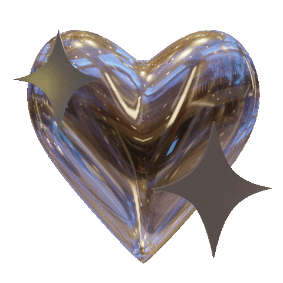

GUIONES
Cuando decides escribir un guion, lo que estás haciendo
es especificar lo que deseas. Sin embargo, el papel en sí mismo no
tiene ningún poder; lo que realmente influye en tu experiencia son tus suposiciones.
Si partes de la premisa de que tu realidad será
exactamente como lo has escrito en el guion, entonces así será.
El guion en sí mismo actúa como un medio para canalizar
tus suposiciones, permitiéndote visualizarlas claramente sobre el papel.
En resumen, los guiones en cambio de realidad son formas de
pensamiento automáticas que influyen en cómo interpretamos nuestras
experiencias y pueden ser modificados para promover una visión más
equilibrada y saludable de la realidad.
CLONES
Primero que todo, es importante mencionar que los "clones" NO EXISTEN.
Tu realidad ya existe en tu realidad dimensional (RD), es algo preexistente.
Por lo tanto, tu subconsciente viaja allí, mientras que tu cuerpo pertenece
a tu realidad actual (RA), donde todo sucede de manera normal.
Presiona para regresar.
